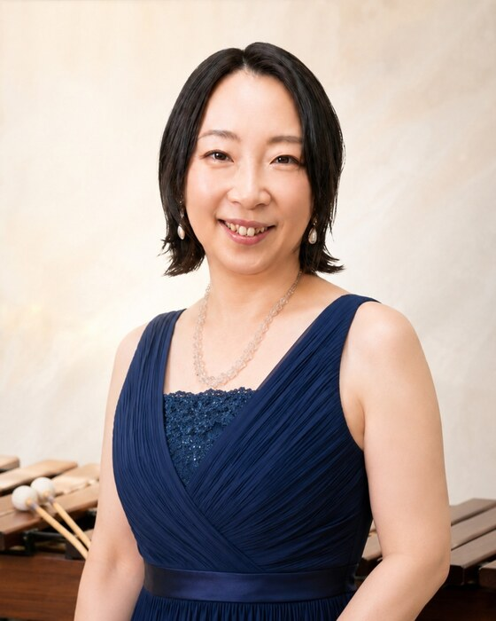
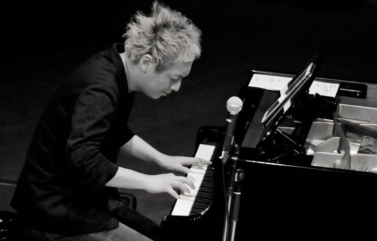
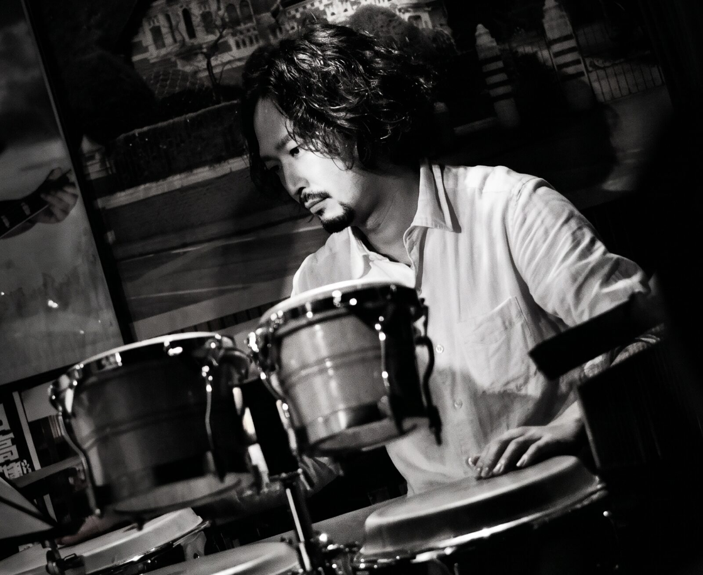

Concept
「結」に込めた想い
人と人、
音と心を結ぶ。
〜未就学児からお年寄りまで、
誰もが楽しめるコンサート〜
木の温もりあふれるマリンバの音色を通し、世代を超えて音楽が結びつく場を目指します。
今回のコンサートタイトル「結」には、いくつもの不思議なご縁が重なり、このソロ演奏会が実現に至ったことへの感謝が込められています。
これらの重なるご縁から生まれたコンサートとして、一音一音を大切に作り上げていきます。音楽を通じた心の旅路をお届けします。
午後のコンサート 〜結〜
PRINT EDITION
折込面 97mm ／ 裏表紙 100mm ／ 表紙 100mm
Concept
人と人、
音と心を結ぶ。
〜未就学児からお年寄りまで、
誰もが楽しめるコンサート〜
木の温もりあふれるマリンバの音色を通し、世代を超えて音楽が結びつく場を目指します。
今回のコンサートタイトル「結」には、いくつもの不思議なご縁が重なり、このソロ演奏会が実現に至ったことへの感謝が込められています。
これらの重なるご縁から生まれたコンサートとして、一音一音を大切に作り上げていきます。音楽を通じた心の旅路をお届けします。
午後のコンサート 〜結〜
Ticket & Access
全席自由 ／ 当日券も会場受付にて販売予定です。
世代を超えて楽しめる名曲をお届けします。
チケットをご購入された方は
安田までご一報いただけますと幸いです
〒060-0001 札幌市中央区北1条西1丁目
さっぽろ創世スクエア内
（札幌市民交流プラザ 3階）
地下鉄「大通」駅 30番出口直結
南北線・東西線・東豊線
JR「札幌」駅より徒歩約10分
地下歩行空間を通って直結
第18回 マリンバ北星会
午後のコンサート

人と人、
音と心を結ぶ。
温かな木の音色に包まれる
午後のひととき
202610.25日
13:00 開場 ／ 13:30 開演
15:15 終演予定
HITARU
クリエイティブスタジオ
安田 愛 マリンバ
田中 K助 ピアノ ／ 土田 祐生 パーカッション
プログラム 100mm ／ 主演 100mm ／ 共演者 97mm
Program
久石譲 / 編曲：安田愛
「となりのトトロ」「魔女の宅急便」など、世代を超えて愛される名曲をマリンバの温かな音色でお届けします。お子様も一緒に楽しめるメドレーです。
坂本龍一 / 編曲：安田愛
映画音楽の名曲を、マリンバの深い響きでお聴きいただきます。木の温もりが奏でる、心に染み入る一曲です。
山田耕筰 / 編曲：小西欣一
日本人の心の原風景を描いた名曲。秋の情景が目に浮かぶような、懐かしさあふれる演奏をお届けします。
尾崎勇太
コンサートタイトルにもなっている曲。もともとはフルートの曲ですが、美しいメロディに惹かれ、選曲いたしました。「人と人の連なり」という想いが込められています。
当日のお楽しみも含め、
全12曲程度をお届けする予定です。
Artist
北海道函館市出身。6歳よりマリンバを始め、会社員として勤務するかたわら、精力的に演奏活動を行う。マリンバ北星会第59号師範免状取得。北原千鳥、木村和枝、浜田美保、小田光子の各氏に師事。
マリンバ北星会主催の国内外のコンサートをはじめ、日本マリンバ協会全国選抜大会出演、JRタワーそらのコンサート等、多数のステージに立つ。1995年・1999年・2007年・2009年の訪中コンサートに参加、2002年にはベトナムでの「ハノイマリンバコンサート」に出演。2007年・2013年 日本マリンバ協会全国選抜大会にアンサンブルで参加。2008年、第4回午後のコンサート ～no marimba, no life～を開催。2009年、TOA DUO CONCERT from MARIMBAを、小祝朋子氏と開催。
マリンバ北星会会員、日本マリンバ協会会員、北海道打楽器協会会員。リトミック研究センター付属教員養成校修了、ディプロマA取得。
一音一音を大切に。
Artists

Piano ／ ピアノ
北海道江差町出身。ピアニスト・作編曲家。テレビ・ラジオ・CM等の音楽制作やCDプロデュースを手がけ、国内外の多彩なコンサートで演奏活動を行う。

Percussion ／ パーカッション
北海道函館市出身、函館観光大使。作曲家・編曲家・作詞家・パーカッショニスト。津軽三味線吉田兄弟をはじめ、様々なアーティストとの共作・共演を重ねる。
OFUSEはログイン不要でおとどけいただけます